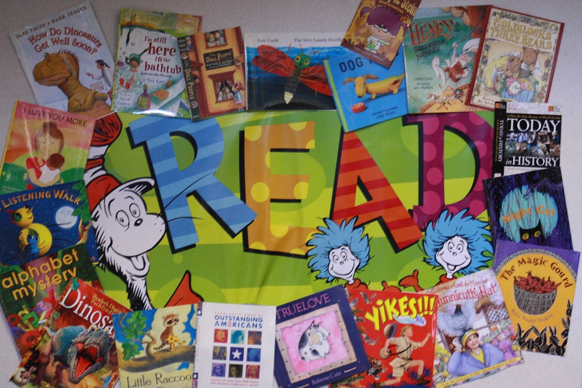

Welcome!
This is our class blog. Please check frequently for important updates, as well as photos from our class!
This is our class blog. Please check frequently for important updates, as well as photos from our class!
Every week, we have a special art lesson in which we study the life of a great master! Afterward, students create a piece of art that emulates that master's work. This week, we are learning about Vincent Van Gogh!
Please mark your calendars for Back to School Night! This is an important opportunity to meet one another, and to learn what your child will be doing this year.

Our class will be taking a trip to Tanaka Farms in Irvine. Please make sure to have your permission slips turned in by Thursday, September 15.
This year's supply list is below. We ask that each child bring the requested items. If you will have any trouble accomplishing this, please just let me know!
In addition, the following items would be very nice to have: